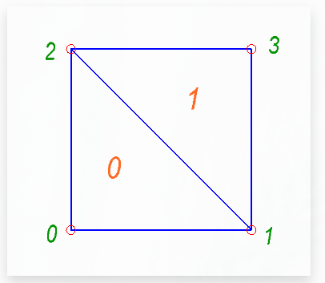
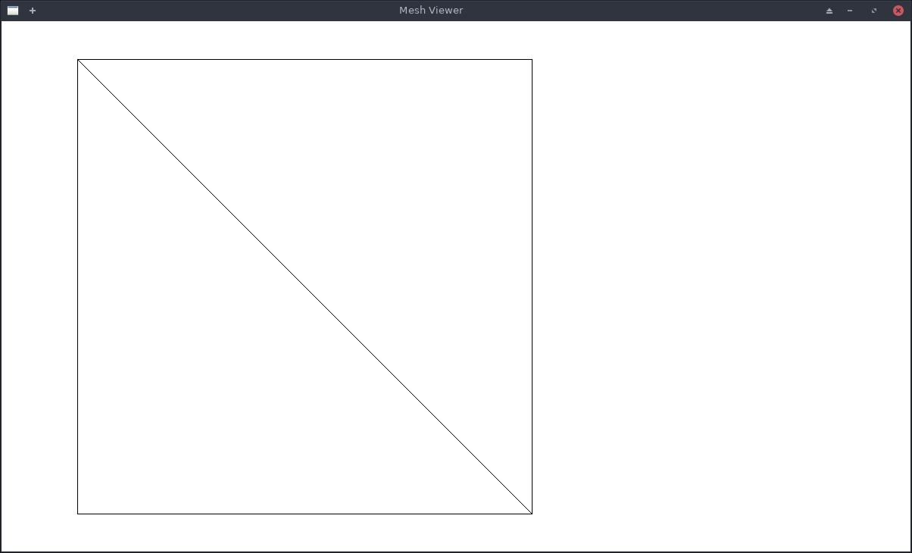
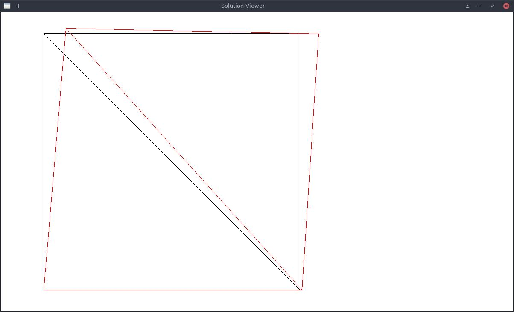
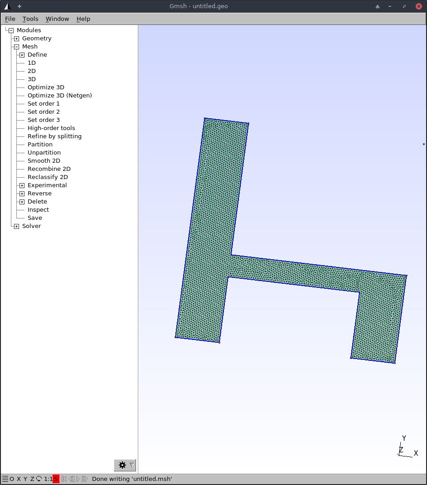
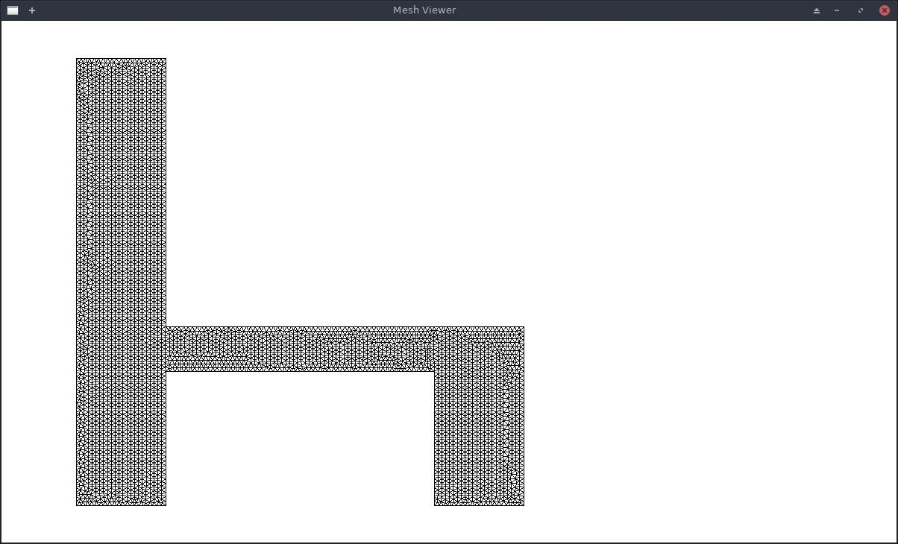
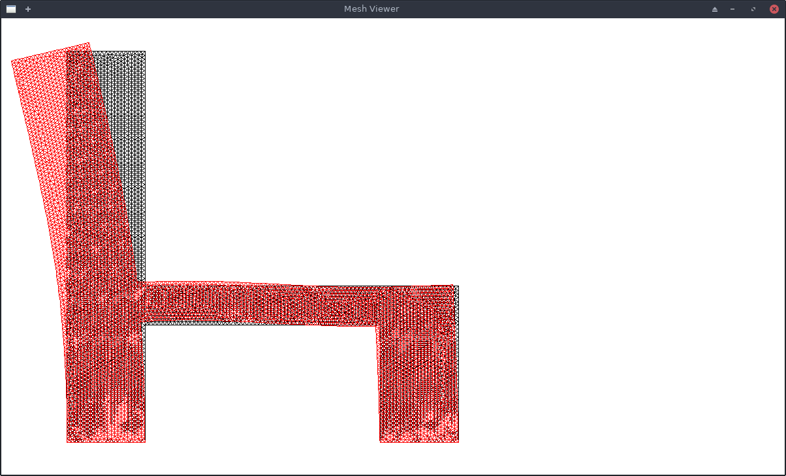

Finite Element Method - Solid Mechanics
Table of Contents
My objective is to use FEM (Finite Element Method) to solve solid mechanics problem of finding body deformation from applied external loads (forces). I followed this excellent article Writing a FEM Solve in less than 180 lines of code and rewrote the solver program in Common Lisp. Aditionally, I wrote a few lines for visualizing the problem and solution and also a mesh file parser to input a complex mesh from gmsh program.
1 Packages & Utilties
Lets setup a packages, and load some utilities.
einstein.lisp provides enistein summation notation for writing matrix operation easily. I used it during prototyping to write linear algebra functions. But for bigger model, linear algebra routines from GSL (GNU Scientific Library) are used for better performance.
linalg.lisp has my naive linear algebra functions. While fastlinalg.lisp provides them using GSL library. (See Utilities section)
parse-mesh.lisp is later used to read mesh from *.msh file. (See 9 section)
;; for einsum notation (load #p"~/lisp/rcc/ml/einstein.lisp") (defpackage #:fem (:use #:cl #:einsum)) (in-package #:fem) ;; linear algebra utilities (load "./parse-mesh.lisp") (load "./fastlinalg.lisp")
2 Input
Lets define input file format for problem input.
2.1 File Format
Its easy to explain the input file structure using an example

Figure 1: Simple Mesh 1
Above mesh has 4 nodes, and 2 triangluar elements and it is represented as follows (and saved in simple-mesh-input file). The representation is similar to Common Lisp code so that I can use built in reading routines for parsing.
;; all units are SI except E which is in MPa :material (:nu .3 :E 2000) ;; poission ratio and Modulus of Elasticity :thickness 1 :nodes ;; coordinates of nodes ((0 0) (1 0) (0 1) (1 1)) :elements ;; trangles are set of 3 nodes; anticlockwise order (a convention we'll use) ((0 1 2) (1 3 2)) :constraints ;; displacement constraints ((0 :xy) ;; 0th node is fixed in x & y dir (1 :y)) ;; 1th node is fixed in y dir :loads ;; forces at nodal points ((2 (50 10)) (3 (0 10)))
It can be easily seen, that we have a square body, that has constraints at its bottom and it is stretched with force applied at its top.
2.2 Input Parsing
parse-input-file function reads the above defineds input file, and creates a problem instance.
(defstruct material (e) (nu)) (defstruct problem (material) (nodes) (elements) (thickness) (constraints) (loads)) (defmethod print-object ((o problem) stream) (print-unreadable-object (o stream) (format stream "Nodes:~a, Elements:~a, Materials: ~a, Constraints: ~a, Loads: ~a" (length (problem-nodes o)) (length (problem-elements o)) (problem-material o) (length (problem-constraints o)) (length (problem-loads o))))) (defun make-vector (tree) "Returns a Vector of vectors from given tree" (let ((vector (make-array (length tree) :fill-pointer 0))) (loop for el in tree do (vector-push (if (listp el) (apply #'vector el) el) vector)) vector)) (defun parse-input-file (&optional (file #p"./simple-mesh-input")) (let ((input (uiop:read-file-forms file))) (make-problem :material (apply #'make-material (getf input :material)) :nodes (make-vector (getf input :nodes)) :elements (make-vector (getf input :elements)) :constraints (getf input :constraints) :thickness (getf input :thickness) :loads (getf input :loads))))
Lets also define simple utility function that abstract problem representation a little. Also *problem* global variable will be used to store the current problem.
(defparameter *problem* nil) (defun node (node-index) (aref (problem-nodes *problem*) node-index)) (defun x (node) (aref node 0)) (defun y (node) (aref node 1)) (defun nodes-count () (length (problem-nodes *problem*)))
Let's test with sample input file
(parse-input-file #p"./simple-mesh-input")
#<Nodes:4, Elements:2, Materials: #S(MATERIAL :E 2000 :NU 0.3), Constraints: 2, Loads: 2>
(let ((p (parse-input-file #p"./simple-mesh-input"))) (print (problem-nodes p)) (print (problem-elements p)) (print (problem-constraints p)) (print (problem-loads p)))
#(#(0 0) #(1 0) #(0 1) #(1 1)) #(#(0 1 2) #(1 3 2)) ((0 :XY) (1 :Y)) ((2 (50 10)) (3 (0 10)))
3 Elasticity Matrix
Elasticity matrix converts strain to stress. We'll need this to define the stiffness matrix.
[σ] = [D] [ε]
[D] is expressed in terms of ν and E; ie the material properties. From mechanics we know the following relations:
\(\epsilon_x = \frac {\sigma_x} E - \nu \frac {\sigma_y} E\)
\(\epsilon_y = - \nu \frac {\sigma_x} E + \frac {\sigma_y} E\)
\(\gamma_{xy} = \frac {2 (1 + \nu)} E \tau_{xy}\)
These relation can used to solve for σ and expressed as:
\begin{equation} [D] = \frac E {1- \nu^2} \begin{bmatrix} 1 & \nu & 0 \\ \nu & 1 & 0 \\ 0 & 0 & \frac{1-\nu} 2 \end{bmatrix} \end{equation}(defmethod elasticity-matrix ((material material)) (let* ((nu (material-nu material)) (d* (make-array '(3 3) :initial-contents `((1 ,nu 0) (,nu 1 0) (0 0 ,(/ (- 1 nu) 2))))) (multiplier (/ (material-e material) (- 1 (expt nu 2))))) (einsum (ij :to ij) :into d* (* multiplier (ij d*))))) (defmethod elasticity-matrix ((p problem)) (elasticity-matrix (problem-material p)))
4 Element Stiffness Matrix
The theme/idea of FEM is that we convert the problem of solving for a function (in our case deformation functions) in complex & big domain, to simple domain (i.e. the elements). Our elements are triangle. And if we can solve the problem of finding deformations withing the triangle given the forces at the nodes, we can solve the big problem.
To solve for deformations resulting from loads, we need to find the gobal stiffness matrix which converts nodal displacement to external load. And inverting that matrix, we can solve for nodal displacements from given external load. However before that, we need the element stiffness matrix. It is an expression for nodal force as function of nodal displacement.
[F] = [k] [δ]
To find this we will use virtual energy principle.
If [δ]* is virtual displacement of nodes of an element, then
External Virtual Work W* = [δ*]' [F]
Internal Virtual Work W* = ∫ [ε*]' [σ] dV
So, we need to find the strain induced due to virtual displacement and the stress induced due to applied loads.
4.1 Strain
If any point inside the triangle at (x,y) is displaced to \(\vec{u}(x,y)\), then the strain at that position is given by
[ε] = [εx; εy; γxy]
where,
\(\vec{u}(x,y) = [ u(x,y) ; v(x,y)] = [u]\) is the vector function which gives deformation/displacement for each point in the domain,
\(\epsilon_x = \frac {\partial u(x,y)} {\partial x}\)
\(\epsilon_y = \frac {\partial v(x,y)} {\partial y}\)
\(\gamma_{xy} = \frac {\partial u(x,y)} {\partial y} + \frac {\partial v(x,y)} {\partial x}\)
Now, we need to express \(\vec{u}(x,y)\) as a function of nodal displacements [δ], then carry out the derivatives to compute ε .
This is done by interpolating the nodal displacements to intermediate points. The interpolating function is called the shape function [N]. If we use linear interpolation, i.e. displacements at inner points of a triangluar element varies linearly then,
[u] = [N] [δ]
and [ε] = [B] [δ]
Function [N] is expressed as a matrix and it turns out to be a constant matrix if we do linear interpolation. Similarly, [B] is also a constant matrix.
Here, [δ] is a vector of nodal displacements. We express δ as (δx1, δy1, δx2, … ,δy3). So, [N] is 2x6 matrix and [B] is 3x6 matrix.
4.2 Internal Virtual Work
Finally, we can express internal virtual works as:
W* = ∫ [ε*]' [σ] dV
= ∫ ([B] [δ*])' ([D][ε]) dV
= ∫ [δ*]' [B]' [D] [B] [δ] dV
Equating to W* = [δ*]' [F]
[F] = ∫ [B]' [D] [B] dV [δ]
so, the element stiffness matrix is
[k] = ∫ [B]' [D] [B] dV
Since, [B] and [D] are constant. ([B] is constant for linear interpolation & [D] is constant for homogeneous material) the integral is easily evaluated as:
[k] = [B]' [D] [B] * V
where V is total Volume of element; V = A * t
5 Code For Element Stiffness Matrix
5.1 Linear Interpolation Function
Linear interpolation function [N] can easily be found by using a little bit of linear algebra.
Let the coordinates of the 3 nodes of triangular elements be \((x_1, y_1)\), \((x_2, y_2)\) & \((x_3, y_3)\) and the corresponding deformation be \((u_1,v_1)\), \((u_2,v_2)\) & \((u_3,v_3)\).
Our linear function for x deformation is
\(u(x,y)=a_u + b_u * x + c_u * y\)
and we need to find the coefficients \(a_u\), \(b_u\) & \(c_u\) such that the equation satifies the nodal displacements i.e.
\(u(x_1,y_1) = u_1 = a_u + b_u * x_1 + c_u * y_1\)
Then matrix [C] defined as:
\begin{equation*} [C] = \begin{bmatrix} 1 & x_1 & y_1 \\ 1 & x_2 & y_2 \\ 1 & x_3 & y_3 \\ \end{bmatrix} \end{equation*}Has the property that,
\begin{equation*} \begin{bmatrix} a_{u} \\ b_u \\ c_u \end{bmatrix} = [C]^{-1} \begin{bmatrix} u_{1} \\ u_2 \\ u_3 \end{bmatrix} \end{equation*}Thus,
\begin{equation*} u(x,y) = \begin{bmatrix} 1 & x & y \end{bmatrix} [C]^{-1} \begin{bmatrix} u_1 \\ u_2 \\ u_3 \end{bmatrix} \end{equation*}Thus,
u(x,y) = [N*] [u1; u2; u3]
v(x,y) = [N*] [v1; v2; v3]
Assembling these expression we find the interpolation function and express it as matrix [N] and its derivative is the matrix [B].
\begin{equation*} [N*] = \begin{bmatrix} N_1 & N_2 & N_3 \end{bmatrix} = \begin{bmatrix} 1 & x & y \end{bmatrix} [C]^{-1} \end{equation*}On differentiation,
\begin{equation*} [\epsilon] = \begin{bmatrix} \frac{\partial N_1} {\partial x} & 0 & \frac{\partial N_2} {\partial x} & 0 & \frac{\partial N_3} {\partial x} & 0 \\ 0 & \frac{\partial N_1} {\partial y} & 0 & \frac{\partial N_2} {\partial y} & 0 & \frac{\partial N_3} {\partial y} \\ \frac{\partial N_1} {\partial y} & \frac{\partial N_1} {\partial x} & \frac{\partial N_2} {\partial y} & \frac{\partial N_2} {\partial x} & \frac{\partial N_3} {\partial y} & \frac{\partial N_3} {\partial x} \\ \end{bmatrix} \begin{bmatrix} u_1 \\ v_1 \\ u_2 \\ v_2 \\ u_3 \\ v_3 \\ \end{bmatrix} \end{equation*}The first matrix in right hand side is matrix [B] and the second one is [δ]
We can see from the expression for [N*] that,
\begin{equation*} \frac{\partial N_i} {\partial x} = [C^{-1}]_{1,i} \\ \frac{\partial N_i} {\partial j} = [C^{-1}]_{2,i} \\ \end{equation*}(indexing starts from 0)
(defun c-matrix (element) (let ((c (make-array '(3 3)))) (loop for node-index across element for node = (node node-index) for x = (aref node 0) for y = (aref node 1) for j from 0 do (setf (aref c j 0) 1 (aref c j 1) x (aref c j 2) y)) c)) (defun B-matrix (element) (let* ((c (c-matrix element)) (c-inv (invert c))) (flet ((delN/x (i x) (case x (:x (grid:aref c-inv 1 i)) (:y (grid:aref c-inv 2 i))))) (make-array '(3 6) :initial-contents (list (list (delN/x 0 :x) 0 (delN/x 1 :x) 0 (delN/x 2 :x) 0) (list 0 (delN/x 0 :y) 0 (delN/x 1 :y) 0 (delN/x 2 :y)) (list (delN/x 0 :y) (delN/x 0 :x) (delN/x 1 :y) (delN/x 1 :x) (delN/x 2 :y) (delN/x 2 :x))))))) (defun interpolation-function (element deflections) (let* ((c (c-matrix element)) (c-inv (invert c)) (u (make-array 3 :initial-contents (list (aref deflections 0) (aref deflections 2) (aref deflections 4)))) (v (make-array 3 :initial-contents (list (aref deflections 1) (aref deflections 3) (aref deflections 5)))) (c1 (einsum (ij :to i) (* (ij c-inv) (j u)))) (c2 (einsum (ij :to i) (* (ij c-inv) (j v))))) (lambda (x y) (let ((tmp (make-array 3 :initial-contents (list 1 x y)))) (values (reduce #'+ (map 'vector #'* c1 tmp)) (reduce #'+ (map 'vector #'* c2 tmp)))))))
5.2 Element Stiffness Matrix
(defun stiffness-matrix (element) (let* ((b (b-matrix element)) (d (elasticity-matrix (problem-material *problem*))) (c (c-matrix element)) (area (abs (* 1/2 (determinant c)))) (thickness (problem-thickness *problem*)) (db (matmul d b (* area thickness)))) ;; k = B' * (D * B) * det(C)/2 * thickness ;; B is 3x6 matrix, D is 3x3 matrix ;; so k is 6*6 matrix (matmul (transpose b) db)))
6 Assembly of Global Stiffness Matrix
Global Stiffness matrix is obtained by stiching together individual element stiffness matrix. First create a 2n by 2n global stiffness matrix, and then for each node of each element add the node's stiffness value to appropriate location in the global stiffness matrix.
To apply the constraints, we modify the matrix's values at the rows and columns of constrained variable such that the solution will result constrainted value. E.g. if node 5's y direction is constrained, then row 5*2+1 = 11 and column 11 will have all entries 0 except the diagonal one. Numerically, this that means node 5's y value (deformation) will be zero, and also it won't affect other values.
(defun create-global-stiffness-matrix () (let* ((n (nodes-count)) (global-k (make-array (list (* 2 n) (* 2 n)) :initial-element 0))) (flet ((add-k (i j xi xj value) (incf (aref global-k (if (eql xi :x) (* 2 i) (1+ (* 2 i))) (if (eql xj :x) (* 2 j) (1+ (* 2 j)))) value))) (loop for element across (problem-elements *problem*) for k = (stiffness-matrix element) do (loop for i across element ;; global index of node for i* from 0 ;; local index of node do (loop for j across element for j* from 0 do (add-k i j :x :x (grid:aref k (* 2 i*) (* 2 j*))) (add-k i j :x :y (grid:aref k (* 2 i*) (1+ (* 2 j*)))) (add-k i j :y :x (grid:aref k (1+ (* 2 i*)) (* 2 j*))) (add-k i j :y :y (grid:aref k (1+ (* 2 i*)) (1+ (* 2 j*))))))) global-k))) (defun apply-constraints (global-k) ;; todo check that loads are not applied in constrained directions on nodes (let ((n (length (problem-nodes *problem*)))) (flet ((zero-out-row-and-col (diag) (loop for ij from 0 below (* 2 n) do (if (= ij diag) (setf (aref global-k ij ij) 1) (setf (aref global-k diag ij) 0 (aref global-k ij diag) 0))))) (loop for constraint in (problem-constraints *problem*) for (node type) = constraint do (cond ((eql type :x) (zero-out-row-and-col (* 2 node))) ((eql type :y) (zero-out-row-and-col (1+ (* 2 node)))) ((eql type :xy) (zero-out-row-and-col (* 2 node)) (zero-out-row-and-col (1+ (* 2 node)))) (t (error "Unknown constraint type ~a" type)))) global-k)))
7 Solution
Finally we can solve the problem.
We create the global stiffness matrix, apply constraints, create load vector and solve the linear equation
[F] = [K] [δ]
to obtain deformations [δ]
(defmacro with-problem ((problem) &body body) `(let ((*problem* ,problem)) ,@body)) (defun solve (problem) (with-problem (problem) (let* ((K (apply-constraints (create-global-stiffness-matrix))) (n (length (problem-nodes problem))) (f (make-array (* 2 n) :initial-element 0))) (loop for (node load) in (problem-loads problem) for (fx fy) = load do (setf (aref f (* 2 node)) fx (aref f (1+ (* 2 node))) fy)) (solve-lineqn K f))))
(solve (parse-input-file #P"./simple-mesh-input"))
#m(0.000000000000000d0 0.000000000000000d0 0.008374999682922d0 0.000000000000000d0 0.087749999103394d0 0.021374999603577d0 0.073374999286194d0 -0.001374999896545d0)
This deformations seem plausible. The 0th node is fixed, as well as the y value of 1st node is 0. A bit of visualization will help.
8 Visualization
Lets define a mesh object for the visualizer to use. Later we'll use this struct for the mesh parser too.
(defstruct mesh (nodes) (elements))
Using sdl, we can quickly write a simple graphics for visualizing the problem and solution.
(ql:quickload :lispbuilder-sdl) (in-package #:fem) (defun transform-node (node) (let ((scale 600)) (sdl:point :x (+ 100 (truncate (* scale (x node)))) :y (- 650 (truncate (* scale (y node))))))) (defun draw-mesh (mesh) (let ((nodes (mesh-nodes mesh))) (flet ((element-nodes (e) (list (aref nodes (aref e 0)) (aref nodes (aref e 1)) (aref nodes (aref e 2)))) (draw-line (node1 node2) (sdl:draw-line (transform-node node1) (transform-node node2)))) (loop for e across (mesh-elements mesh) for nodes = (element-nodes e) do (draw-line (first nodes) (second nodes)) (draw-line (second nodes) (third nodes)) (draw-line (third nodes) (first nodes)))))) (defun show-mesh (mesh) (sdl:with-init () (sdl:window 1200 700 :resizable t :title-caption "Mesh Viewer") (setf sdl:*default-color* sdl:*black*) (sdl:initialise-default-font) (sdl:clear-display sdl:*white*) (draw-mesh mesh) (sdl:update-display) (sdl:with-events () (:quit-event () t) (:key-down-event (:key key) (cond ((eql key :sdl-key-q) (sdl:push-quit-event))))))) (defun displaced-mesh (mesh solution) (let ((newnodes (make-array (length (mesh-nodes mesh))))) (loop for n across (mesh-nodes mesh) for i from 0 do (setf (aref newnodes i) (vector (+ (aref n 0) (aref solution (* i 2))) (+ (aref n 1) (aref solution (1+ (* i 2))))))) (make-mesh :nodes newnodes :elements (mesh-elements mesh)))) (defun draw-solution (mesh solution) (let ((sdl:*default-color* sdl:*red*)) (draw-mesh (displaced-mesh mesh solution)))) (defun show-solution (mesh solution) (sdl:with-init () (sdl:window 1200 700 :resizable t :title-caption "Solution Viewer") (setf sdl:*default-color* sdl:*black*) (sdl:initialise-default-font) (sdl:clear-display sdl:*white*) (draw-mesh mesh) (draw-solution mesh solution) (sdl:update-display) (sdl:with-events () (:quit-event () t) (:key-down-event (:key key) (cond ((eql key :sdl-key-q) (sdl:push-quit-event)))))))
(let ((p (parse-input-file #p"./simple-mesh-input"))) (show-mesh (make-mesh :nodes (problem-nodes p) :elements (problem-elements p))))

and its solution
(defun solve-and-show (problem) (let ((solution (solve problem))) (show-solution (make-mesh :nodes (problem-nodes problem) :elements (problem-elements problem)) (grid:cl-array solution))))
(solve-and-show (parse-input-file #p"./simple-mesh-input"))

At node 2 (top left corner) a horizontal force of 50N (right) and vertical force of 10N (up) is applied, and at node 3 (top right corner) a vertical load of 10N (up) is applied.
The resulting displacements (exagerated) is visualised above.
9 Complex Meshes
We can use our custom input format for simple meshes only. For complex shapes, we need help of other software to generated mesh. gmsh is a free and open software for meshing of 2D and 3D domain. It outputs a .msh file that we can import into our solver.
Using gmsh, I created a simple chair like mesh

Now, we need to write a parser of the .msh file. .msh is a text file will simple format.
9.1 Parser
(in-package #:fem) ;; https://gmsh.info/doc/texinfo/gmsh.html#MSH-file-format (defparameter *mesh* nil) (defparameter *mesh-type* :3d) (defstruct mesh (nodes) (elements)) (defmethod print-object ((o mesh) stream) (print-unreadable-object (o stream) (format stream "Nodes:~a, Elements:~a" (length (mesh-nodes o)) (length (mesh-elements o))))) (defmacro with-mesh-file ((file) &body body) `(with-open-file (*mesh* ,file :direction :input) ,@body)) (defmacro with-section (name &body body) `(let ((,name (handler-case (read-section-name) (end-of-file (e) (declare (ignore e)) nil)))) ,@body)) (defun whitespace-charp (char) (or (char= char #\Space) (char= char #\Newline) (char= char #\Return))) (defun read-nowhitespace-char () (let ((char (read-char *mesh*))) (if (whitespace-charp char) (read-nowhitespace-char) char))) (defun read-string () (with-output-to-string (str) (loop for char = (read-char *mesh* nil nil) do (if (or (null char) (whitespace-charp char)) (return) (write-char char str))))) (defun read-section-name () (let (($ (read-nowhitespace-char))) (unless (char= $ #\$) (error "not at start of section")) (read-string))) (defun skip-section (name) (loop with end-marker = (format nil "$End~a" name) for line = (read-line *mesh*) do (when (string= line end-marker) (return)))) (defun end-section (name) (let ((end-marker (format nil "$End~a" name)) (line (read-line *mesh*))) (cond ((every #'whitespace-charp line) (end-section name)) ((string= line end-marker) t) (t (error "Section ~a doesn't end at ~a" name line))))) (defun read-integer () ;; TODO: implement checks for integer (read *mesh*)) (defun read-number () ;; reads integers or double floats ;; TODO: same as above (read *mesh*)) (defmacro with-integers (names &body body) `(let (,@(loop for n in names collect `(,n (read-integer)))) ,@body)) (defun read-triangle () (vector (read-integer) (read-integer) (read-integer))) (defun read-node () (ecase *mesh-type* (:3d (vector (read-number) (read-number) (read-number))) (:2d (prog1 (vector (read-number) (read-number)) (read-number))))) ;; $Nodes ;; numEntityBlocks(size_t) numNodes(size_t) ;; minNodeTag(size_t) maxNodeTag(size_t) ;; entityDim(int) entityTag(int) parametric(int; 0 or 1) ;; numNodesInBlock(size_t) ;; nodeTag(size_t) ;; ... ;; x(double) y(double) z(double) ;; < u(double; if parametric and entityDim >= 1) > ;; < v(double; if parametric and entityDim >= 2) > ;; < w(double; if parametric and entityDim == 3) > ;; ... ;; ... ;; $EndNodes (defun read-nodes () (with-integers (num-blocks num-nodes node-min node-max) (declare (ignore num-nodes node-min)) (let ((nodes (make-array (1+ node-max) :initial-element nil))) (loop repeat num-blocks do (with-integers (entity-dim entity-tag parametric num-nodes-in-block) (declare (ignore entity-dim entity-tag)) (assert (= parametric 0)) (let ((block-nodes (make-array num-nodes-in-block :fill-pointer 0))) ;; read block numbers (loop repeat num-nodes-in-block do (vector-push (read-integer) block-nodes)) (loop for node-number across block-nodes do (setf (aref nodes node-number) (read-node)))))) (end-section "Nodes") nodes))) ;; $Elements ;; numEntityBlocks(size_t) numElements(size_t) ;; minElementTag(size_t) maxElementTag(size_t) ;; entityDim(int) entityTag(int) elementType(int; see below) ;; numElementsInBlock(size_t) ;; elementTag(size_t) nodeTag(size_t) ... ;; ... ;; ... ;; $EndElements (defun read-elements () (with-integers (num-blocks num-elements element-min element-max) (declare (ignore element-min element-max)) (let ((elements (make-array num-elements :fill-pointer 0))) (loop repeat num-blocks do (with-integers (entity-dim entity-tag element-type num-elements) ;;(declare (ignore entity-dim entity-tag)) (case element-type (15 ;; one node point (loop repeat num-elements do (read-integer) (read-integer))) (1 ;; 2 node line (loop repeat num-elements do (read-integer) (read-integer) (read-integer))) (2 ;; 3 node triangle (loop repeat num-elements do (read-number) ;; ignore element-number (vector-push (read-triangle) elements))) (t (print (list entity-dim entity-tag num-elements)) (error "Can't handle element-type ~a" element-type))))) (end-section "Elements") elements))) (defun cleanup-mesh (mesh) "Remove missing ids; and remove nodes that don't belong to any element" (with-slots (nodes elements) mesh (let ((cnodes (make-array (length nodes) :fill-pointer 0)) (celements (make-array (length elements) :fill-pointer 0)) (bitmap (make-array (length nodes) :element-type 'bit :initial-element 0))) (loop for e across elements do (map 'nil (lambda (n) (setf (aref bitmap n) 1)) e)) (loop for bit across bitmap for i from 0 do (when (= bit 0) (setf (aref nodes i) nil))) (loop for n across nodes for i* from 0 with i = 0 do (when n (vector-push n cnodes) (setf (aref nodes i*) i) (incf i))) (loop for e across elements do (vector-push (map 'vector (lambda (node-i) (aref nodes node-i)) e) celements)) (make-mesh :nodes cnodes :elements celements)))) (defun read-mesh (file) (declare (optimize (debug 3))) (with-mesh-file (file) (let (nodes elements) (loop do (with-section name (cond ((eql name nil) (return)) ((string= name "Nodes") (setf nodes (read-nodes))) ((string= name "Elements") (setf elements (read-elements))) (t (skip-section name))))) (cleanup-mesh (make-mesh :nodes nodes :elements elements))))) (defun read-2d-mesh (file) (let ((*mesh-type* :2d)) (read-mesh file)))
Lets check the mesh:
(show-mesh (read-2d-mesh #p"./chairlike.msh"))

9.2 Solution
Once we have the mesh we can setup the constraints and load, and solve the problem.
- The material properties are set as of steel.
- Nodes and elements are read from the file using the parser we just wrote above.
- Thickness (in Z-direction) is 10cm.
- All bottom nodes (with y-coordinate = 0) are constrained in x & y direction.
- Load is applied in horizontal direction (left) at the top nodes near coordinate (0.01,0.99). Total load is 0.1N distributed among 131 nodes that fall in the region of distance < sqrt(0.01) from (0.01,0.99).
(defun mesh-problem () (flet ((dist (node x y) (+ (expt (- (x node) x) 2) (expt (- (y node) y) 2)))) (let ((mesh (read-2d-mesh #p"~/untitled.msh"))) (make-problem :material (make-material :e 2000 :nu 0.3) :nodes (mesh-nodes mesh) :elements (mesh-elements mesh) :thickness 0.1 :constraints ;; all bottom nodes are fixed (loop for n across (mesh-nodes mesh) for index from 0 when (and n (= (y n) 0)) collect (list index :xy)) :loads ;; nodes near the top have a slight left direction load (loop for n across (mesh-nodes mesh) for index from 0 when (and n (< (dist n 0.01 0.99) 0.01)) collect (list index (list (/ -.1 131) 0)))))))
(mesh-problem #p"./chairlike.msh")
Now we can give the problem to the solver and visualize it.
(solve-and-show (mesh-problem #p"./chairlike.msh"))

10 Utilities
10.1 Linear Algebra - Pure Common Lisp
These naive implementation of Linear Algebra functions are feasible only for very small meshes. I wrote these during rapid prototyping.
(in-package #:fem) (defun minor (matrix i j) (let* ((n (array-dimension matrix 0)) (minor (make-array (list (1- n) (1- n))))) (loop for i* from 0 below (1- n) do (loop for j* from 0 below (1- n) do (setf (aref minor i* j*) (aref matrix (if (< i* i) i* (1+ i*)) (if (< j* j) j* (1+ j*)))))) minor)) (defun determinant (matrix) (let ((n (array-dimension matrix 0))) (cond ((= n 0) (error "No Determinant of a zero dimensional matrix")) ((= n 1) (aref matrix 0 0)) ((= n 2 (- (* (aref matrix 0 0) (aref matrix 1 1)) (* (aref matrix 0 1) (aref matrix 1 0))))) (t (loop for j from 0 below n summing (* (aref matrix 0 j) (expt -1 j) (determinant (minor matrix 0 j)))))))) (defun adjoint (matrix) (let* ((n (array-dimension matrix 0)) (adjoint (make-array (list n n)))) (loop for i from 0 below n do (loop for j from 0 below n do (setf (aref adjoint i j) (* (expt -1 (+ i j)) (determinant (minor matrix i j)))))) adjoint)) (defun invert (matrix) (let ((det (determinant matrix))) (when (= det 0) (error "Determinant of matrix is zero; can't invert")) (let ((adj (adjoint matrix))) (einsum (ij :to ij) (/ (ji adj) det))))) (defun matmul (m1 m2 &optional (alpha 1)) (cond ((vectorp m2) (einsum (ij :to i) (* (ij m1) (j m2) alpha))) (t (einsum (ijk :to ik) (* (ij m1) (jk m2) alpha))))) (defun solve-lineq (A b) "Solves A x = b" (matmul (invert A) b)) (defun transpose (m1) (einsum (ij :to ij) (ji m1)))
10.2 Linear Algebra - GSL (GNU Scientific Library)
For big meshes, we'll need to use routines provided by GSL Library. Actually I should have used sparse matrix representaion and corresponding alogrithms, but lets keep that for another day.
(ql:quickload :gsll) (in-package #:fem) (defun make-gsll-matrix (lisp-array) (cond ((typep lisp-array 'grid:foreign-array) lisp-array) ((= (array-rank lisp-array) 2) (let ((matrix (make-instance 'grid:matrix-double-float :element-type 'double-float :dimensions (array-dimensions lisp-array)))) (loop for i from 0 below (array-dimension lisp-array 0) do (loop for j from 0 below (array-dimension lisp-array 1) do (setf (grid:aref matrix i j) (coerce (aref lisp-array i j) 'double-float)))) matrix)) ((= (array-rank lisp-array) 1) (let ((matrix (make-instance 'grid:vector-double-float :element-type 'double-float :dimensions (array-dimensions lisp-array)))) (loop for i from 0 below (length lisp-array) do (setf (grid:aref matrix i) (coerce (aref lisp-array i) 'double-float))) matrix)) (t (error "Con't covert to gsll array")))) (defun determinant (matrix) (multiple-value-bind (lu perm signum) (gsll:lu-decomposition (make-gsll-matrix matrix)) (declare (ignore perm)) (gsll:lu-determinant lu signum))) (defun invert (matrix) (multiple-value-bind (lu perm signum) (gsll:lu-decomposition (make-gsll-matrix matrix)) (declare (ignore signum)) (gsll:lu-invert lu perm))) (defun matmul (m1 m2 &optional alpha) "m1*m2 * alpha; alpha is scalar" (if alpha (gsll:matrix-product (make-gsll-matrix m1) (make-gsll-matrix m2) nil alpha) (gsll:matrix-product (make-gsll-matrix m1) (make-gsll-matrix m2)))) (defun solve-lineqn (A b) "Solves A x = b" (multiple-value-bind (lu perm signum) (gsll:lu-decomposition (make-gsll-matrix A)) (declare (ignore signum)) (gsll:lu-solve lu (make-gsll-matrix b) perm t))) (defun transpose (m1) (einsum (ij :to ij) (ji m1)))